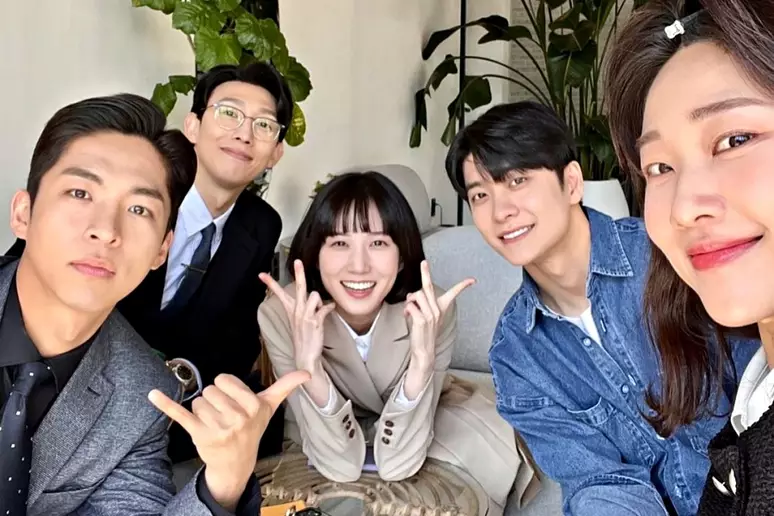

Uma Advogada Extraordinária
Uma Advogada Extraordinária é uma série de televisão sul-coreana de 2022 estrelada por Park Eun-bin no papel-título, junto com Kang Tae-oh, Kang Ki-young, Ha Yoon-kyung e Joo Jong-hyuk. Foi ao ar na ENA de 29 de junho a 18 de agosto de 2022, todas as quartas e quintas-feiras às 21h (KST) por 16 episódios. Também está disponível para streaming na Netflix em regiões selecionadas.
A série estabeleceu o recorde para as classificações mais altas da história da ENA. A série recebeu aclamação do público com seu episódio final registrando uma classificação nacional de 17,5%, tornando-se o sétimo drama mais bem avaliado na história da televisão a cabo coreana e o sexto drama de televisão mais bem avaliado pelo número de espectadores.
Sinopse
Uma Advogada Extraordinária conta a história de Woo Young-woo (Park Eun-bin), uma advogada com transtorno do espectro do autismo que é criada por seu pai solteiro. Ela cresce com uma única amiga na escola, Dong Geu-ra-mi (Joo Hyun-young), uma garota excêntrica que a protege dos valentões da escola. Ela se forma como a melhor de sua turma da faculdade de direito na Universidade Nacional de Seul. Por causa de sua condição, ninguém vai contratá-la. No entanto, através de uma conexão de seu pai, ela consegue seu primeiro emprego em Hanbada, um grande escritório de advocacia de Seul. A inteligência e a memória fotográfica da advogada Woo a ajudam a se tornar uma excelente advogada, pois ela é capaz de lembrar as leis e quase tudo que lê, vê ou ouve perfeitamente.
Sendo diferente dos pares neurotípicos, sua maneira de comunicação é inicialmente vista pela maioria como estranha e sua forte inteligência emocional permanece desconhecida. Mas à medida que a série avança, muitas das pessoas que ela conhece, como seu advogado supervisor, Jung Myung-seok (Kang Ki-young), sua colega de Faculdade de Direito e colega, Choi Su-yeon (Ha Yoon-kyung), e o funcionário de apoio jurídico Lee Jun-ho (Kang Tae-oh) ajuste-se a ela enquanto ela aprende seu ofício como advogada novata. Mas ela também encontra pessoas que têm preconceito contra ela e outras pessoas com deficiência.
Muitos dos casos legais da série envolvem questões jurídicas bem equilibradas e, às vezes, questões éticas difíceis. A abordagem da advogada Woo é muitas vezes única e ajuda a resolver casos de maneiras inesperadas.
Outro tema que percorre a série é o forte interesse de Young-woo por baleias e outros mamíferos marinhos. Sua tendência a analogizar situações que enfrenta em sua vida profissional e privada com as vidas e características de baleias e golfinhos muitas vezes surpreende e confunde as pessoas que a cercam. Seus momentos de lâmpada muitas vezes coincidem com fantasiar sobre essas criaturas.
Elenco

Principais
- - Park Eun-bin como Woo Young-woo e Oh Ji-yul como jovem Woo Young-woo: Uma advogada novata no Hanbada Law Firm. Ela é a primeira advogada ASD na Coreia.
- - Kang Tae-oh como Lee Jun-ho: Um funcionário da equipe de contencioso da Hanbada.
- - Kang Ki-young como Jung Myung-seok: Um advogado sênior da Hanbada e mentor de Woo Young-woo.
Apoio
- - Jeon Bae-soo como Woo Gwang-ho e Jang Seong-beom como jovem Woo Gwang-ho: Pai solteiro de Woo Young-woo.
- - Baek Ji-won como Han Seon-young: CEO da Hanbada.
- - Jin Kyung como Tae Soo-mi e Jung Han-bit como jovem Tae Soo-mi: CEO do Escritório de Advocacia Taesan.
- - Ha Yoon-kyung como Choi Su-yeon: Colega de escola de direito de Woo Young-woo e colega em Hanbada.
- - Joo Jong-hyuk como Kwon Min-woo: Colega de Woo Young-woo em Hanbada.
- - Joo Hyun-young como Dong Geu-ra-mi: Amigo próximo de Woo Young-woo.
Produção
As filmagens da série terminaram em 14 de julho de 2022.
Em 17 de agosto de 2022, o presidente Lee Sang Baek da AStory, a produtora de Uma Advogada Extraordinária, confirmou que o drama será renovado para uma segunda temporada. A segunda temporada está prevista para estrear em 2024.
Trilha sonora original
| Nº |
Música |
Artista |
Duração |
| 1 |
"Brave" (용기) |
Kim Jong-wan (Nell) |
4:21 |
| 2 |
"Beyond My Dreams" (상상) |
Sunwoo Jung-a |
3:05 |
| 3 |
"Better Than Birthday" |
O3ohn |
3:46 |
| 4 |
"Tuning In To You" |
Wonstein |
3:00 |
| 5 |
"Inevitable" |
Suzy |
3:51 |
| 6 |
"The Blue Night of Jeju Island" |
Park Eun-bin |
4:09 |
| 7 |
"Flash" |
Maytree |
1:05 |
| 8 |
"Overture" |
Noh Young Shim |
5:18 |
| 9 |
"Woo Young-woo, the Same Backwards and Forwards" |
Noh Young Shim |
1:55 |
| 10 |
"Prom Dance" |
Noh Young Shim |
2:53 |
| ... |
Saiba mais em ... |
Trilha sonora |
|
Referências